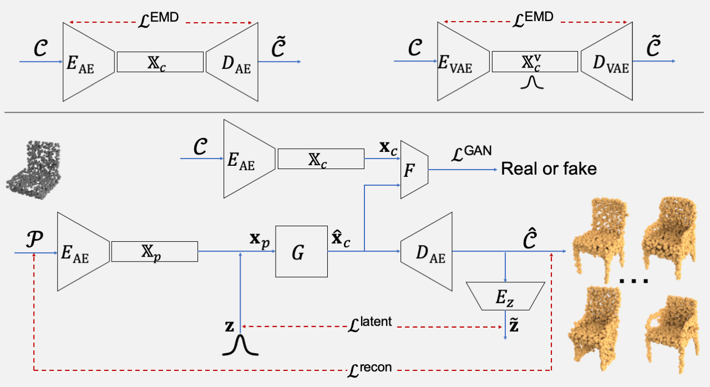

Abstract & Method
Several deep learning methods have been proposed for completing partial data from shape acquisition setups, i.e., filling the regions that were missing in the shape.
These methods, however, only complete the partial shape with a single output, ignoring the ambiguity when reasoning the missing geometry.
Hence, we pose a multi-modal shape completion problem, in which we seek to complete the partial shape with multiple outputs by learning a one-to-many mapping. We develop the first multimodal shape completion method that completes the partial shape via conditional generative modeling, without requiring paired training data.

We design a conditional generative adversarial network (cGAN) wherein a generator learns to map incomplete training data, combined with a latent vector sampled from a learned multimodal shape distribution, to a suitable latent representation such that a discriminator cannot differentiate between the mapped latent variables and the latent variables obtained from complete training data (i.e., complete shape models).